Notre Patrimoine Culinaire
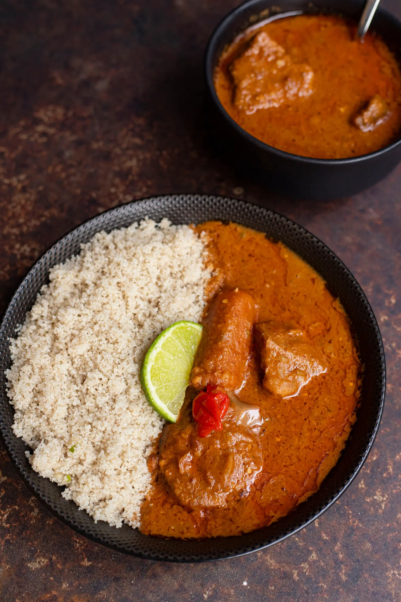
Le Fini (Fonio)
Le fonio, ou "Fini", est une céréale millénaire, légère et digeste, très prisée au Mali.
L'Histoire
Considéré comme la "graine de l'univers", le fonio demande un savoir-faire unique pour son lavage et sa cuisson à la vapeur. C'est le goût de la terre nourricière.
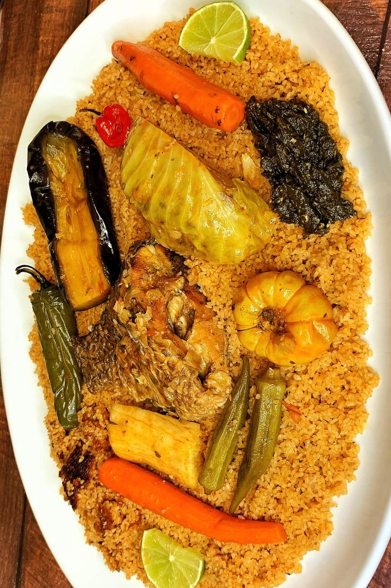
Le Zamei
Un plat généreux et savoureux, pilier de la cuisine familiale malienne.
L'Histoire
Le Zamei est le symbole du repas partagé. Préparé avec soin, il réunit les générations autour d'un goût authentique et réconfortant.
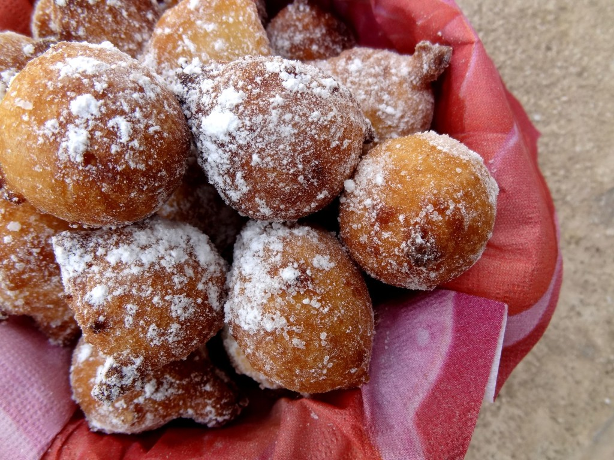
Le Froufrou
Petits beignets dorés et croustillants, incontournables des marchés et des goûters.
L'Histoire
Vendus au coin des rues, les froufrous apportent une touche de douceur quotidienne. Leur secret réside dans la légèreté de la pâte fritte.
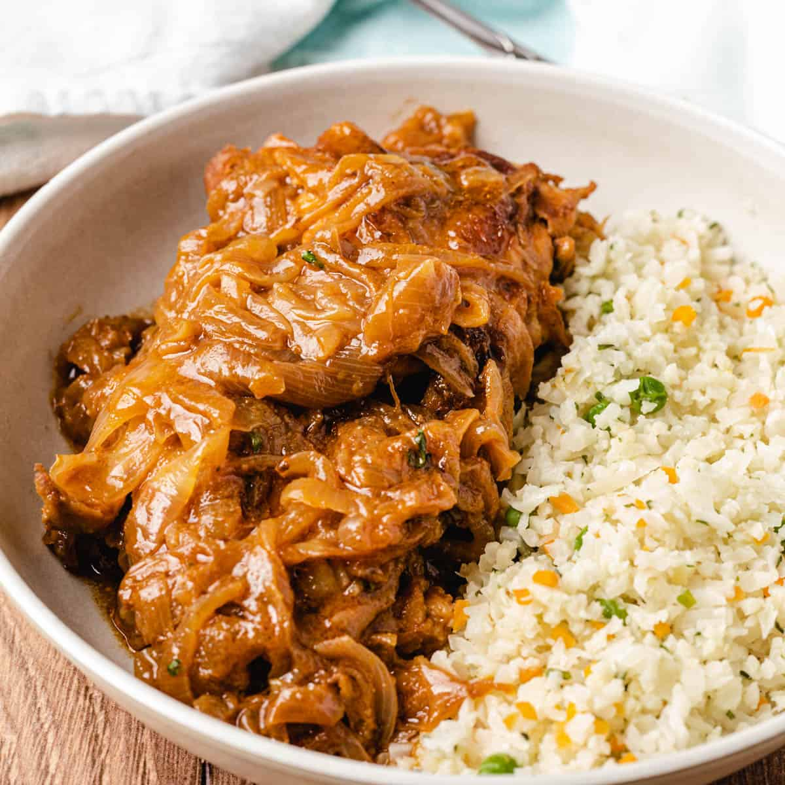
Yassa Carne
Une variante savoureuse du Yassa, mettant à l'honneur une viande marinée et braisée.
L'Histoire
La force des oignons caramélisés et du citron sublime la viande pour créer un plat plein de tempérament et de fraîcheur.
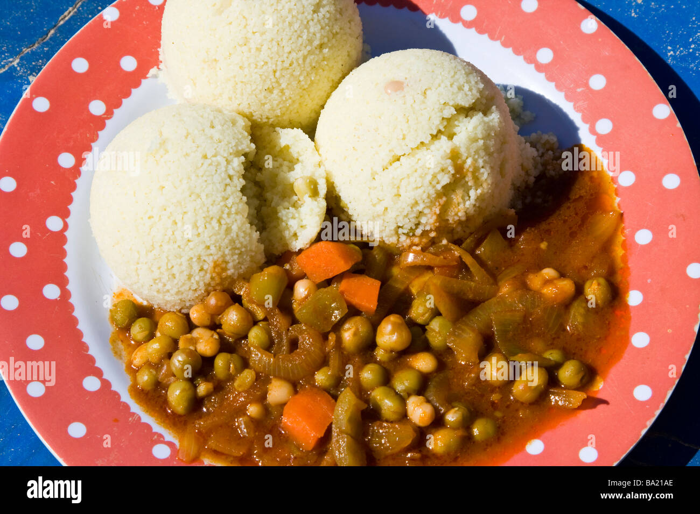
Le Cuscus
Un couscous délicat, souvent associé aux riches sauces de la région de Tombouctou.
L'Histoire
Héritage des échanges millénaires, le couscous malien se distingue par sa finesse et les épices uniques qui l'accompagnent.
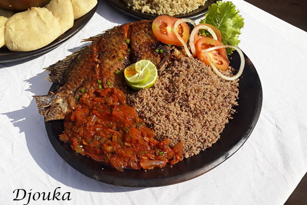
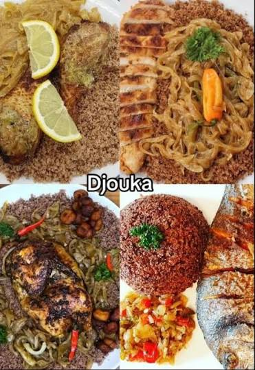
Le Djouka
Un délicieux mélange de fonio et de pâte d'arachide, décliné ici en deux versions : **au poisson** et **au poulet**.
L'Histoire
Le Djouka est un plat de fête. Que ce soit avec le "Capitaine" du fleuve ou une volaille fermière, il reste le favori des grandes occasions.
.jpeg)
.jpeg)
La Sauce Fakoye
La célèbre sauce noire des Songhaïs, présentée ici **au riz avec viande de mouton** et dans sa variante **à la vache**.
L'Histoire
Plat de prestige par excellence, le Fakoye est une alchimie de feuilles de corète et d'épices secrètes du désert.
.jpeg)
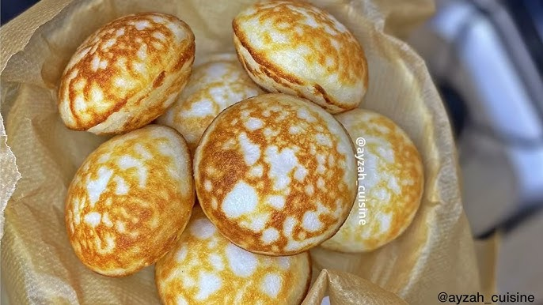
Le NGomi
Galettes de riz fermenté, légères et spongieuses, idéales pour commencer la journée.
L'Histoire
Le NGomi est le réveil des sens. Sa texture unique obtenue par fermentation en fait une perle de la boulangerie traditionnelle.
.jpeg)
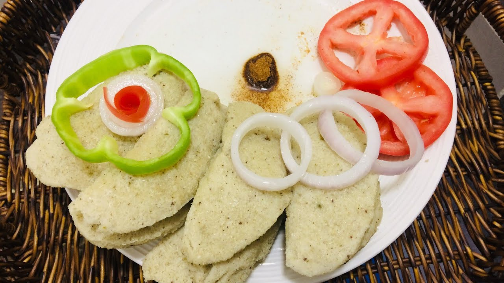
Le Fari
Un plat de céréales robuste, présenté ici **nature** et dans sa version **avec gombo**.
L'Histoire
Le Fari incarne la cuisine rustique et saine. Accompagné de gombo, il devient un plat gluant et savoureux très apprécié.
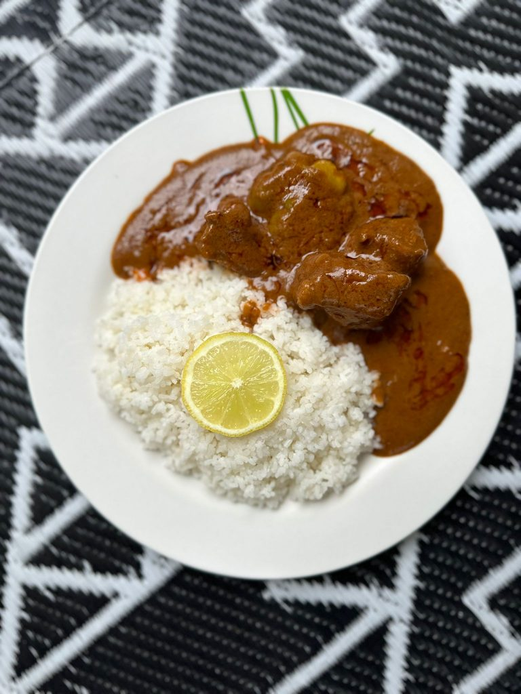
Tigatiguenan au Riz
Le riz à la sauce d'arachide, pilier incontesté de la table malienne.
L'Histoire
C'est le plat qui rassemble. Onctueux et nutritif, il est le témoin privilégié de la convivialité et du partage familial.
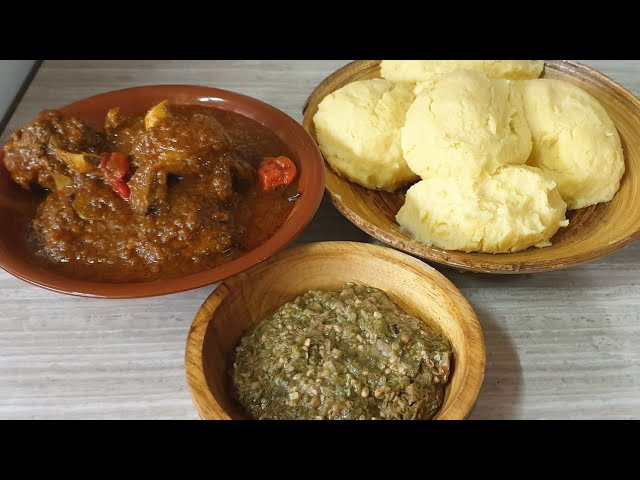
La To Malienne
La pâte de mil ou de sorgho, base fondamentale de l'alimentation au Mali.
L'Histoire
Manger la To, c'est honorer ses ancêtres. C'est un plat de force et de dignité, toujours servi avec une sauce riche en saveurs.

Carte du Mali
De Bamako à Kidal, un pays riche de sa diversité et de ses saveurs.
La Fierté
Le Mali est un carrefour de cultures où chaque région apporte sa touche unique à notre patrimoine culinaire national.